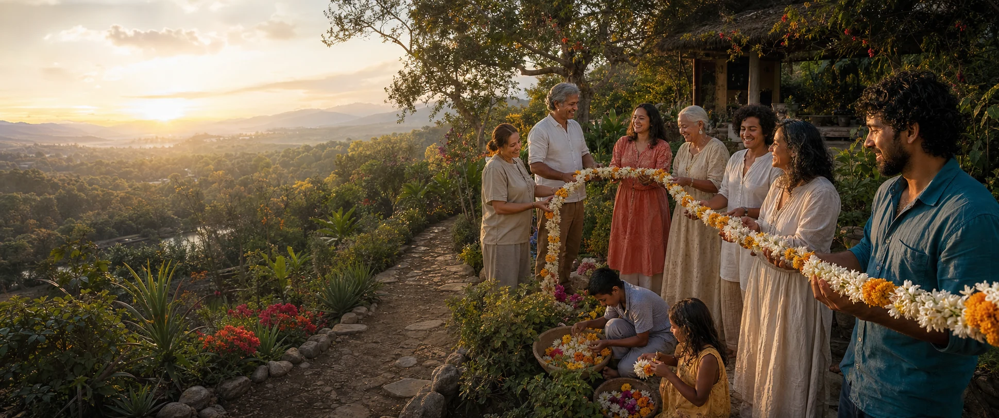

Joyful
Love, sexuality, play, beauty, celebration and curiosity belong in serious thinking about the future.

GAJRA Earth imagines joyful responsible abundance: distinct people, cultures, places and intelligences held in relationship without being made the same.
Concept artwork
In a gajra, each flower keeps its identity while the thread holds them together. Global Group Marriages brings that idea to many independent families, each with its own bonds and agreements.
Luke's United Nations of Love would bring people from different cultures together in a family and shared enterprise. GAJRA Earth opens up cooperation across cultures to anyone who wants to take part in its wider work.
The prospectus connects creative work with the proposed 2035 gathering, three days of music, art and votes on values led by communities that choose to participate.

These ideas connect through lived principles rather than one central authority.
Love, sexuality, play, beauty, celebration and curiosity belong in serious thinking about the future.
Children, care, law, resources, power and long consequences remain part of the same picture.
Value includes time, knowledge, affection, culture, creativity, nature and relationship, not only money.
People participate as whole intelligences, with private interiors and real agency inside the shared world.
Global Group Marriages is one public doorway inside a wider ecosystem of law, place, desire, story, music, travel, personal reflection and cognitive architecture.
Love, play, learn, teach.